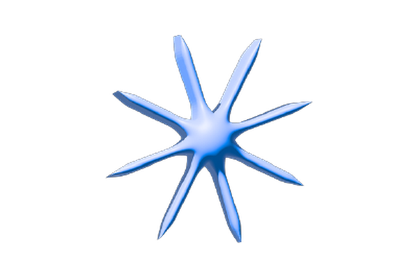

May – Aug 2025
SeatCatcher (Notion, 새 탭에서 열림)
- Backend for a subway seat-sharing app: report and route-history APIs, FCM push notifications and in-app inbox, with per-user access control and service tests.
프로젝트·연구·대회·수상과 전체 이력
May – Aug 2025

2024 – Feb 2025
Nov – Dec 2024
Aug 2026 – Present
A Korean military-domain safety benchmark (military secrets, military discipline, ideology) and K-Guard, a guard model fine-tuned from kanana-safeguard-8b with QLoRA.
2026
Seon Hong Lee, Wonseok Choi, Woojoon Lee, Yuchan Kim. Korea Institute of Military Science and Technology (KIMST) Annual Conference, 2026.
아직 등록된 항목이 없습니다.
To be updated.
Feb 2026 – Nov 2026
Sep 2024 – Feb 2025
Nov 2023 – Dec 2024
School of Computer Science and Engineering, Soongsil University